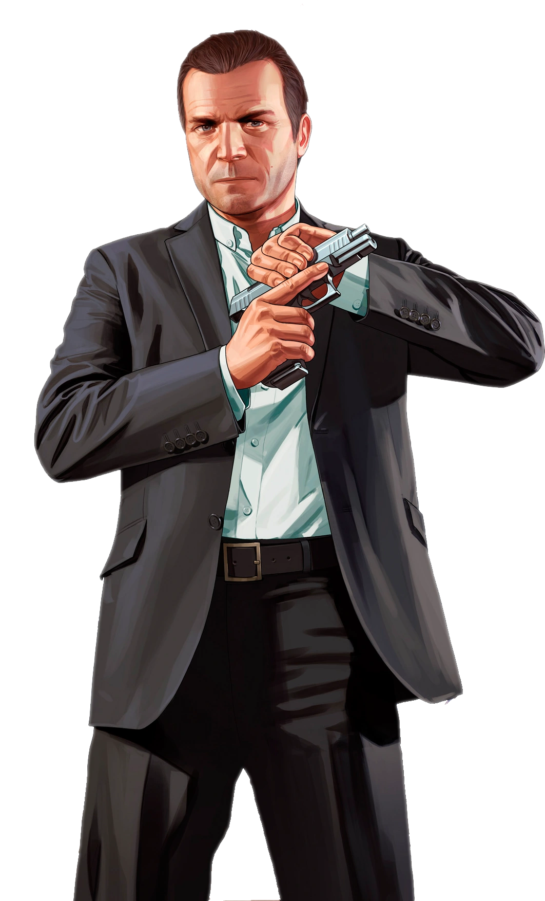

Michael De Santa
Es uno de los tres protagonistas de Grand Theft Auto V. Es un exitoso ex-ladrón de bancos de la costa este, actualmente retirado. Tiene aproximadamente 45 años. Él vive en su lujosa mansión con su esposa Amanda, con quien no se lleva muy bien, y sus hijos Tracey y James a quienes no entiende.

Franklin Clinton
Franklin Clinton es uno de los tres protagonistas de Grand Theft Auto V. Es un joven ambicioso de 25 años que vivió en una pequeña casa en South Los Santos, junto a su tía Denise Clinton en el inicio del juego, y acabó viviendo en una mansión en Vinewood Hills. Trabajó para un vendedor de autos de lujo armenio llamado Simeon Yetarian.

Trevor Philips
Trevor Philips es uno de los tres protagonistas de Grand Theft Auto V, Nacido en la frontera de Estados Unidos de América y Canadá vive en Sandy Shores, Blaine County junto al Alamo Sea.

Lamar Davis
Un peregrino optimista en un viaje espiritual. El camino de Sherma a menudo se cruza con el de Hornet, pero su falta de combate y destreza acrobática lo pueden llevar a una necesidad desesperada de ayuda.